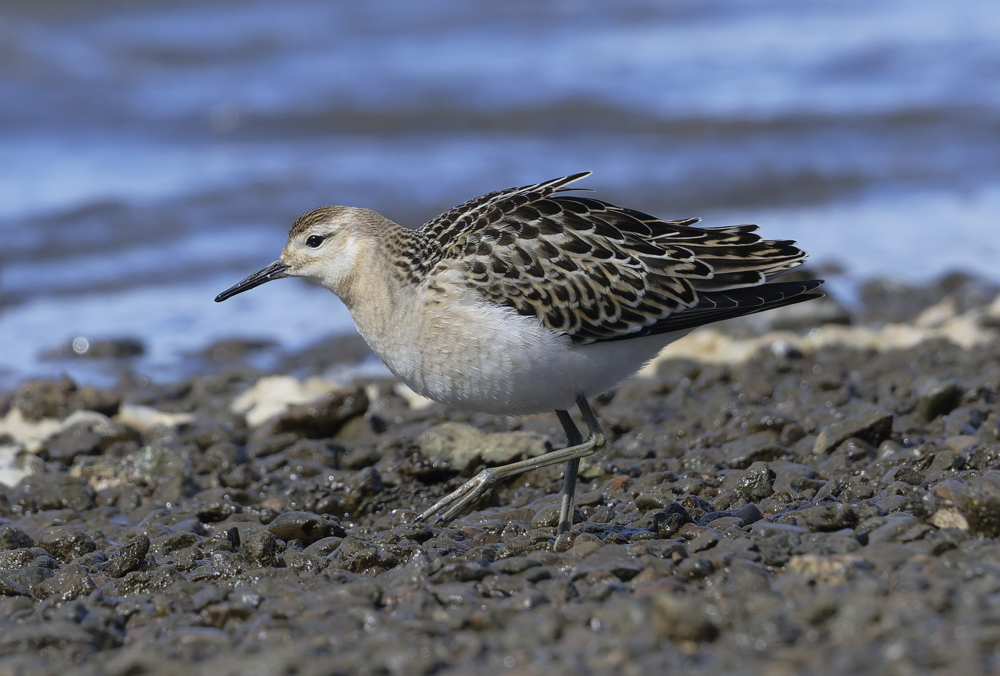

Calidris pugnax — طائر الاستعراض الذي يتبدل مظهره
الاسم الصحيح
النفاش المشاكس هو Calidris pugnax، من فصيلة دجاج الأرض Scolopacidae ورتبة الزقزاقيات Charadriiformes. تضعه AviList 2026 في جنس Calidris؛ أما Philomachus pugnax الذي يظهر في كتب وقواعد بيانات أقدم فهو اسم سابق للنوع نفسه، وليس طائرًا إضافيًا. لا يدل وصف «المشاكس» على أنه يؤذي الطيور الأخرى عمومًا، بل يرتبط بصورة الذكور المتنافسة في موسم التزاوج. وهو طائر خواض يتغير منظره كثيرًا بين الربيع والخريف. ويستخدم دليل لبنان لعام 2026 اسم «دريجة شرسة».
ريش الزينة ليس ريش الشتاء
يحمل كثير من الذكور في موسم التكاثر طوقًا ضخمًا من الريش وزوائد ريشية حول الرأس، تتنوع ألوانها بين الأبيض والأسود والبني المحمر. الذكر أكبر بوضوح من الأنثى، لكن الطيور خارج التكاثر لا تحمل هذه الزينة اللافتة. عندئذ يُبحث عن رأس صغير وعنق طويل نسبيًا ومنقار غير طويل يميل طرفه قليلًا إلى أسفل. لون الرجلين متغير، فلا يعتمد عليه وحده. تبدو اليافعات دافئة اللون على الوجه والصدر، مع حواف فاتحة منتظمة لريش الظهر. ويظهر في الطيران بياض على جانبي قاعدة الذيل؛ لذلك تُجمع علامات البنية والريش بدل انتظار الطوق الشهير.
تمييزه في أسراب الخواضات
قد تلتبس الأنثى الصغيرة بطيطوي أخرى، بينما يوحي الذكر الأكبر بطائر مختلف تمامًا في السرب نفسه. لا يُفسر فرق الحجم وحده بأنه اختلاف نوعي. يختلف عن الطيطوي أحمر الساق في نسب الرأس والمنقار وفي نمط بياض الجناح والذيل، ويختلف عن طيطوي الغيط في البنية والريش؛ لكن الصور البعيدة لا تسمح دائمًا بتعيين موثوق. في الخريف والشتاء من الطبيعي أن تكون مشاهدة طائر بلا طوق هي المشاهدة المعتادة، وليست علامة على أن الصورة لا تمثل النفاش.
المعيشة والتكاثر
يرتاد الحقول الرطبة والمروج المغمورة والبرك والهوامش الطينية، وليس مقصورًا على البحر. يلتقط اللافقاريات من الأرض والماء الضحل، ويأكل أيضًا مواد نباتية وبذورًا، ويتجمع خارج التكاثر في أسراب قد تكون مختلطة. يتكاثر في مناطق رطبة من شمال أوراسيا، حيث تتجمع الذكور للاستعراض في ساحات تقصدها الإناث. تتولى الأنثى الحضانة ورعاية الفراخ، ولا يقوم الذكر بدور الأب المعتني بالحضنة. العش على الأرض والفراخ متحركة بعد الفقس. يصل جزء كبير من الطيور شتاء إلى إفريقيا، وتمتد مناطق الشتاء أيضًا إلى جنوب آسيا.
المواسم في البلدان العربية
في لبنان تصفه قائمة 2020 بعابر شائع إلى وفير، مع مرور خريفي يمتد من أوائل أغسطس إلى منتصف نوفمبر، ووجود شتوي قليل في بعض المواقع الساحلية. ولذلك قد تمثل مشاهدة أوائل نوفمبر نهاية العبور لا تجمعًا شتويًا مستقرًا. في الكويت هو عابر غير شائع وزائر شتوي نادر، مع وجود صيفي لا يثبت التكاثر. في المقابل تصنفه قاعدة طيور عُمان وفيرًا في العبور والشتاء. وتوثق تعدادات المغرب حضوره الشتوي في الأراضي الرطبة. لا يجوز نقل هذه الدرجات المحلية إلى كامل الخليج أو المشرق؛ تختلف أهمية الموقع بحسب مياهه وموسمه وإدارة الحقول حوله. ويؤكد دليل لبنان لعام 2026 وفرة العبور وقلة الوجود الشتوي.
الحفظ والتعامل المسؤول
تصنيفه العالمي أقل إثارة للقلق LC، لكن استنزاف الأراضي الرطبة وتحويل المروج والتلوث والإزعاج قد يقلل موائل التغذية والتكاثر. الحفاظ على فسيفساء البرك والحقول الرطبة مهم بقدر الحفاظ على البحيرات الكبيرة. تُراقب الأسراب من حافة بعيدة ولا تُدفع إلى الطيران المتكرر، خاصة أثناء التزود بالغذاء في الهجرة. حالة الحفظ العالمية ليست ترخيصًا بالصيد، كما أن التباين الكبير في الريش يستدعي الحذر قبل إطلاق أي حكم على صورة أو طائر بعيد.
المراجع
AviList Core Team — AviList v2026, 20 October 2026.
British Trust for Ornithology — BirdFacts: Ruff; RSPB — Ruff.
Kuwait Ornithological Rarities Committee — Kuwait Bird List; Kuwait Birds: Ruff.
Ramadan-Jaradi et al. — Updated checklist of the birds of Lebanon, Sandgrouse 42, 2020.
Birds of Oman — national species database, Ruff under the earlier combination Philomachus pugnax.
Waders wintering in Morocco: national population estimates and trends, Wader Study Group Bulletin 96, 2001.
Ramadan-Jaradi & Itani — Birds of Lebanon: A Photographic Guide to 409 Species, second edition, UNDP, June 2026.
الصورة: Лариса Артемьева — CC0-1.0.